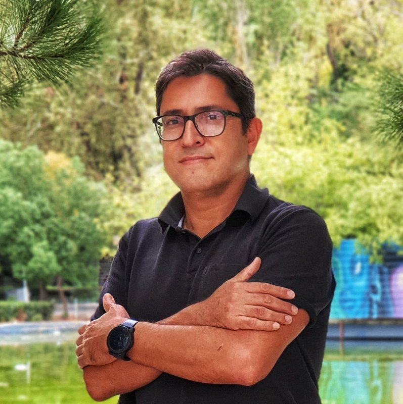

Kişisel web sitesiPersonal website
Dr. Çağlar Tükel
İklim ve Temiz Enerji Uzmanı · MühendisClimate and Clean Energy Specialist · Engineer
İzmir Büyükşehir Belediyesi, İklim Değişikliği ve Temiz Enerji Şube Müdürlüğüİzmir Metropolitan Municipality, Climate Change and Clean Energy Directorate
Kentlerin iklim değişikliğine hazırlanması, enerjiyi verimli kullanması ve sera gazı salımlarını azaltması üzerine çalışıyorum. İşimde coğrafi bilgi sistemlerini (CBS) ve AB destekli projeleri bir araya getiriyorum.I work on helping cities prepare for climate change, use energy efficiently and cut greenhouse gas emissions. My work combines geographic information systems (GIS) with EU-funded projects.
Çalışma alanlarıFocus areas
- İklime uyumClimate adaptationKentsel iklim riski değerlendirmesiUrban climate risk assessment
- Kentsel dirençlilikUrban resilienceAşırı sıcak, taşkın ve kuraklığa hazırlıkPreparing for extreme heat, floods and drought
- Temiz enerji ve azaltımClean energy and mitigationEnerji verimliliği, yenilenebilir enerji, sera gazı azaltımıEnergy efficiency, renewable energy, GHG mitigation
- CBS ve uzaktan algılamaGIS and remote sensingHaritalama, mekânsal analiz, veri çalışmalarıMapping, spatial analysis, data work